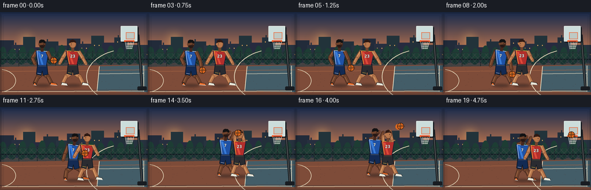
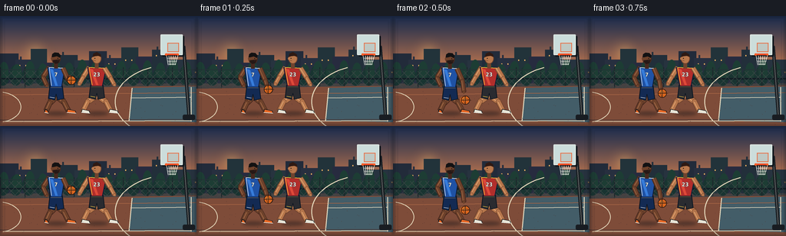

CODING AGENTS AS PIXEL WORLD MODELS
traex/GPT-5.6-Sol · instance_preservation_0035
点击播放 · 原生 RGB 像素
此结果可播放，但该运行尚未通过最终提交审核。页面展示不代表评测通过。
逐轮保存的候选
回放视频、检查图与代码变化。
每份候选均可单独播放。实际图片检查记录在下方工具轨迹中。
候选 01播放与检查图
点击播放 · 原生 RGB 像素


展开代码变化
--- 上一保存版本
+++ 本次保存版本
@@ -0,0 +1,280 @@
+from pathlib import Path
+import math
+import numpy as np
+from PIL import Image, ImageDraw, ImageFont, ImageFilter
+import artifact_io
+
+# Procedural text-to-video renderer: two persistent, distinct players on an outdoor court.
+W, H, N = 256, 144, 20
+S = 4
+
+def sc(v): return int(round(v*S))
+def pts(seq): return [(sc(x), sc(y)) for x,y in seq]
+def E(d, box, fill, outline=None, width=1):
+ d.ellipse(tuple(sc(v) for v in box), fill=fill, outline=outline, width=sc(width) if outline else 1)
+def P(d, xy, fill, outline=None, width=1):
+ d.polygon(pts(xy), fill=fill)
+ if outline: d.line(pts(list(xy)+[xy[0]]), fill=outline, width=sc(width), joint='curve')
+def L(d, xy, fill, width=1): d.line(pts(xy), fill=fill, width=sc(width), joint='curve')
+def R(d, box, fill, outline=None, width=1, radius=0):
+ b=tuple(sc(v) for v in box)
+ if radius: d.rounded_rectangle(b, radius=sc(radius), fill=fill, outline=outline, width=sc(width))
+ else: d.rectangle(b, fill=fill, outline=outline, width=sc(width) if outline else 1)
+
+try:
+ FONT_B = ImageFont.truetype('/usr/share/fonts/truetype/dejavu/DejaVuSans-Bold.ttf', sc(4.3))
+ FONT_NUM = ImageFont.truetype('/usr/share/fonts/truetype/dejavu/DejaVuSansCondensed-Bold.ttf', sc(7))
+except Exception:
+ FONT_B = FONT_NUM = ImageFont.load_default()
+
+# colors
+SKIN1=(110,66,43,255); SKIN1_H=(159,103,70,255); SKIN1_D=(71,40,30,255)
+SKIN2=(183,119,76,255); SKIN2_H=(225,166,114,255); SKIN2_D=(112,67,46,255)
+
+
+def base_background(i):
+ # dusk sky rendered as a rich vertical gradient with a slight time-varying glow
+ hh, ww = H*S, W*S
+ arr=np.zeros((hh,ww,3),dtype=np.uint8)
+ top=np.array([29,45,77.]); horizon=np.array([224,133,79.]);
+ for y in range(hh):
+ yy=y/S
+ if yy<80:
+ a=(yy/80.)**1.15
+ col=top*(1-a)+horizon*a
+ else:
+ a=(yy-80)/(H-80)
+ col=np.array([75,69,68.])*(1-a)+np.array([39,46,53.])*a
+ arr[y,:,:]=np.clip(col,0,255)
+ im=Image.fromarray(arr,'RGB').convert('RGBA')
+ d=ImageDraw.Draw(im)
+ # sun halo
+ halo=Image.new('RGBA',im.size,(0,0,0,0)); hd=ImageDraw.Draw(halo)
+ E(hd,(21,24,69,72),(255,174,88,10)); E(hd,(29,32,61,64),(255,184,95,20)); E(hd,(39,42,53,56),(255,216,140,140))
+ halo=halo.filter(ImageFilter.GaussianBlur(sc(6))); im=Image.alpha_composite(im,halo); d=ImageDraw.Draw(im)
+ # distant skyline and lit windows
+ buildings=[(-4,49,24,88),(20,57,44,88),(40,43,61,88),(57,61,79,88),(75,51,101,88),(97,58,120,88),(116,46,139,88),(136,55,162,88),(158,41,180,88),(177,53,203,88),(198,44,221,88),(217,57,260,88)]
+ for k,b in enumerate(buildings):
+ col=(34+5*(k%2),43+4*(k%3),58+5*(k%2),255)
+ R(d,b,col)
+ # rooftop detail
+ if k%3==1: R(d,(b[0]+6,b[1]-4,b[0]+8,b[1]),col)
+ for wy in np.arange(b[1]+7,b[3]-4,9):
+ for wx in np.arange(b[0]+5,b[2]-3,8):
+ if (int(wx+wy+k*3)%4)==0: R(d,(wx,wy,wx+1.2,wy+1.5),(242,180,98,135))
+ # trees as subtle silhouettes
+ for x in range(3,256,17):
+ E(d,(x-8,64+(x%4),x+9,91),(25,52,49,255)); E(d,(x-4,57+(x%7),x+8,84),(29,61,52,255))
+ # chain-link fence
+ R(d,(0,81,256,83),(18,30,36,255))
+ for x in range(0,257,32): R(d,(x,67,x+1,104),(28,39,43,220))
+ L(d,[(0,70),(256,70)],(37,50,53,210),1)
+ for x in range(-18,270,10): L(d,[(x,72),(x+25,98)],(64,73,72,80),.45)
+ for x in range(-18,270,10): L(d,[(x+25,72),(x,98)],(64,73,72,70),.45)
+ # court surface
+ P(d,[(0,95),(256,91),(256,144),(0,144)],(126,76,57,255))
+ # broad light reflection / painted key
+ P(d,[(173,94),(256,92),(256,139),(168,137)],(67,93,104,190))
+ # fine surface bands and grain
+ L(d,[(0,103),(256,100)],(164,99,68,120),1)
+ L(d,[(0,136),(256,135)],(75,58,54,110),1)
+ # court markings: baseline, three-point arc, lane
+ L(d,[(7,138),(249,137)],(232,214,182,230),1.25)
+ L(d,[(172,94),(168,137)],(225,216,190,235),1.25)
+ L(d,[(249,93),(249,138)],(225,216,190,235),1.25)
+ L(d,[(170,107),(249,106)],(225,216,190,215),1)
+ # curved 3-point arc (sampled)
+ arc=[]
+ for a in np.linspace(math.pi*.62, math.pi*1.38,30): arc.append((224+74*math.cos(a),112+48*math.sin(a)))
+ L(d,arc,(227,214,185,220),1.2)
+ # center circle portion left
+ arc=[]
+ for a in np.linspace(-1.35,1.35,24): arc.append((-3+30*math.cos(a),119+20*math.sin(a)))
+ L(d,arc,(227,214,185,170),1)
+ # texture speckles deterministic
+ rng=np.random.default_rng(120+i*0) # stable texture supports temporal consistency
+ for _ in range(95):
+ x=float(rng.uniform(0,256)); y=float(rng.uniform(97,143)); q=float(rng.uniform(.15,.48))
+ E(d,(x,y,x+q,y+q),(78,52,48,90))
+ return im
+
+
+def draw_hoop(im):
+ d=ImageDraw.Draw(im)
+ # pole and base behind action
+ L(d,[(239,39),(246,131)],(24,29,34,255),4.5); L(d,[(239,39),(246,131)],(87,91,91,255),1.2)
+ R(d,(238,129,254,136),(25,29,34,255),radius=2)
+ # support arm
+ L(d,[(240,52),(219,47)],(35,39,42,255),3)
+ # backboard shadow + glass
+ R(d,(211,26,240,53),(17,23,29,190),radius=1)
+ R(d,(209,24,238,51),(204,221,219,80),outline=(221,231,226,240),width=1.2,radius=1)
+ R(d,(218,35,233,47),(191,201,196,50),outline=(232,112,71,255),width=1)
+ # rim
+ L(d,[(216,50),(232,50)],(241,76,34,255),2.2)
+ E(d,(214.8,48.7,218,51.8),(248,93,39,255)); E(d,(230,48.7,233,51.8),(248,93,39,255))
+ # net tapered, clearly visible
+ for j in range(6):
+ x=217+j*2.9; L(d,[(x,52),(219+j*1.8,64)],(235,238,226,215),.65)
+ for y,x0,x1 in [(55,217.7,231.2),(59,218.5,230.2),(63,220,229)]: L(d,[(x0,y),(x1,y)],(235,238,226,180),.55)
+
+
+def limb(d,a,b,skin,light,dark,width=5):
+ # outlined anatomical segment, then warm highlight
+ L(d,[a,b],dark,width+1.8); L(d,[a,b],skin,width)
+ dx=b[0]-a[0]; dy=b[1]-a[1]; ln=max(.01,math.hypot(dx,dy)); ox=-dy/ln*.8; oy=dx/ln*.8
+ L(d,[(a[0]+ox,a[1]+oy),(b[0]+ox,b[1]+oy)],light,max(.6,width*.16))
+ E(d,(b[0]-width*.46,b[1]-width*.46,b[0]+width*.46,b[1]+width*.46),skin,outline=dark,width=.6)
+
+
+def shoe(d,ankle,toe,color,sole=(227,227,220,255)):
+ L(d,[ankle,toe],(22,26,31,255),4)
+ P(d,[(ankle[0]-1,ankle[1]-2),(toe[0]+3,toe[1]-1),(toe[0]+4,toe[1]+2),(ankle[0]-2,ankle[1]+2)],color,outline=(16,21,26,255),width=.7)
+ L(d,[(ankle[0]-2,ankle[1]+2),(toe[0]+4,toe[1]+2)],sole,1)
+
+
+def draw_player(im, pose, who, number):
+ # pose: hip, shoulders, knees, ankles, elbows, hands, look
+ d=ImageDraw.Draw(im)
+ hip=pose['hip']; sl,sr=pose['shoulders']; kl,kr=pose['knees']; al,ar=pose['ankles']; el,er=pose['elbows']; hl,hr=pose['hands']
+ if who==1:
+ skin,hi,dark=SKIN1,SKIN1_H,SKIN1_D; jersey=(31,82,165,255); jersey_hi=(55,124,218,255); shorts=(19,42,83,255); trim=(226,232,232,255); shoe_c=(230,105,39,255)
+ else:
+ skin,hi,dark=SKIN2,SKIN2_H,SKIN2_D; jersey=(178,46,43,255); jersey_hi=(222,73,57,255); shorts=(42,43,48,255); trim=(242,199,62,255); shoe_c=(232,229,214,255)
+ # moving soft contact shadow
+ ground=max(al[1],ar[1]); shadow=Image.new('RGBA',im.size,(0,0,0,0)); sd=ImageDraw.Draw(shadow)
+ E(sd,(hip[0]-14,ground+1,hip[0]+15,ground+6),(12,18,25,105)); shadow=shadow.filter(ImageFilter.GaussianBlur(sc(2))); im.alpha_composite(shadow)
+ d=ImageDraw.Draw(im)
+ # rear leg then front leg
+ limb(d,(hip[0]-3,hip[1]-1),kr,skin,hi,dark,7); limb(d,kr,ar,skin,hi,dark,5.5); shoe(d,ar,(ar[0]+6,ar[1]+1),shoe_c)
+ limb(d,(hip[0]+2,hip[1]),kl,skin,hi,dark,7); limb(d,kl,al,skin,hi,dark,5.5); shoe(d,al,(al[0]-1 if who==1 else al[0]+5,al[1]+1),shoe_c)
+ # shorts
+ waist_y=hip[1]-12
+ P(d,[(hip[0]-8,waist_y),(hip[0]+8,waist_y),(hip[0]+10,hip[1]+5),(hip[0]+2,hip[1]+7),(hip[0],hip[1]-1),(hip[0]-2,hip[1]+7),(hip[0]-10,hip[1]+5)],shorts,outline=(13,22,34,255),width=1)
+ L(d,[(hip[0]-7,waist_y+2),(hip[0]+7,waist_y+2)],trim,1)
+ L(d,[(hip[0]-8,hip[1]+3),(hip[0]-2,hip[1]+4)],trim,.7)
+ # back arm
+ limb(d,sl,el,skin,hi,dark,5); limb(d,el,hl,skin,hi,dark,4.4)
+ # torso athletic trapezoid
+ neckx=(sl[0]+sr[0])/2; shouldery=(sl[1]+sr[1])/2
+ torso=[(sl[0]-2,sl[1]),(sr[0]+2,sr[1]),(hip[0]+7,waist_y+2),(hip[0]-7,waist_y+2)]
+ P(d,torso,jersey,outline=(15,27,51,255),width=1)
+ # jersey highlights/trim and side panel
+ L(d,[sl,sr],trim,1.1); L(d,[sl,(hip[0]-6,waist_y)],trim,.7)
+ P(d,[(sl[0]+1,sl[1]+2),(sl[0]+5,sl[1]+3),(hip[0]+2,waist_y),(hip[0]-1,waist_y)],jersey_hi)
+ # number
+ tx=sc(hip[0])-FONT_NUM.getlength(str(number))/2; ty=sc(shouldery+5)
+ d.text((int(tx),int(ty)),str(number),font=FONT_NUM,fill=(242,239,224,245),stroke_width=sc(.35),stroke_fill=(18,31,49,230))
+ # front arm
+ limb(d,sr,er,skin,hi,dark,5); limb(d,er,hr,skin,hi,dark,4.3)
+ # neck and head
+ head=(neckx+pose.get('head_dx',0),shouldery-12+pose.get('head_dy',0))
+ L(d,[(neckx,shouldery+1),(head[0],head[1]+4)],dark,5)
+ # ears/head
+ E(d,(head[0]-6,head[1]-7,head[0]+6,head[1]+7),skin,outline=dark,width=.9)
+ E(d,(head[0]-6.7,head[1]-1.5,head[0]-4.4,head[1]+1.7),skin)
+ # hair and hairline
+ if who==1:
+ P(d,[(head[0]-5.8,head[1]-2),(head[0]-5,head[1]-6),(head[0]-2,head[1]-8),(head[0]+3,head[1]-7.5),(head[0]+6,head[1]-4),(head[0]+5,head[1]-1),(head[0]+1,head[1]-3),(head[0]-3,head[1]-2)],(19,18,19,255))
+ # short beard
+ P(d,[(head[0]-4,head[1]+2),(head[0]+5,head[1]+1),(head[0]+3,head[1]+6),(head[0]-1,head[1]+7),(head[0]-4,head[1]+4)],(38,25,22,180))
+ else:
+ P(d,[(head[0]-5.5,head[1]-2),(head[0]-4.5,head[1]-6.5),(head[0],head[1]-8.5),(head[0]+5,head[1]-5.5),(head[0]+5.5,head[1]-2),(head[0]+2,head[1]-3.5),(head[0]-2,head[1]-3)],(47,26,20,255))
+ # face direction and expression
+ look=pose.get('look',1); eye_x=head[0]+look*2.4
+ E(d,(eye_x-.65,head[1]-.8,eye_x+.35,head[1]+.15),(20,18,18,255))
+ L(d,[(head[0]+look*1.5,head[1]+3),(head[0]+look*3.6,head[1]+2.5)],dark,.65)
+ # fingers give hands definition
+ for hand in (hl,hr):
+ L(d,[(hand[0]-1.7,hand[1]+1),(hand[0]+2,hand[1]+1.5)],hi,.6)
+
+
+def ball(d,x,y,r=5,alpha=255):
+ # outline, leather radial gradient approximation, seams
+ E(d,(x-r-.8,y-r-.8,x+r+.8,y+r+.8),(39,23,16,alpha))
+ E(d,(x-r,y-r,x+r,y+r),(218,103,31,alpha))
+ E(d,(x-r*.62,y-r*.72,x+r*.2,y+r*.12),(245,145,53,min(alpha,220)))
+ L(d,[(x-r,y),(x+r,y)],(54,30,19,alpha),.65)
+ L(d,[(x,y-r),(x,y+r)],(54,30,19,alpha),.65)
+ arc1=[(x-r*.75+1.5*r*.15*k, y-r*math.sqrt(max(0,1-(-.75+1.5*.15*k)**2))*.36) for k in range(11)]
+ L(d,arc1,(62,31,18,alpha),.6)
+ arc2=[(x-r*.42*math.cos(a),y+r*math.sin(a)) for a in np.linspace(-math.pi/2,math.pi/2,16)]
+ L(d,arc2,(62,31,18,alpha),.55)
+
+
+def poses(i):
+ # Returns blue offensive player, red defender, and ball location.
+ if i <= 5:
+ phase=i/5
+ bx=73+3*phase; by=103+math.sin(i*.8)*.5
+ # rhythmic low dribble, down-up-down across six frames
+ cyc=[84,96,110,101,88,97][i]
+ bpose={'hip':(bx,by),'shoulders':((bx-9,by-36),(bx+9,by-35)),
+ 'knees':((bx-8,by+10),(bx+10,by+9)),'ankles':((bx-13,124),(bx+16,124)),
+ 'elbows':((bx-17,by-23),(bx+16,by-19)),'hands':((bx-12,by-12),(bx+18,min(cyc-5,by-4))), 'look':1}
+ rx=126-2*phase; ry=102
+ rpose={'hip':(rx,ry),'shoulders':((rx-10,ry-35),(rx+10,ry-34)),
+ 'knees':((rx-12,ry+10),(rx+12,ry+10)),'ankles':((rx-18,124),(rx+18,124)),
+ 'elbows':((rx-18,ry-22),(rx+18,ry-21)),'hands':((rx-23,ry-13),(rx+23,ry-12)), 'look':-1}
+ return bpose,rpose,(bx+20,cyc)
+ elif i <= 11:
+ q=(i-6)/5
+ bx=81+46*q; by=103-2*q
+ cyc=[106,94,108,97,86,80][i-6]
+ bpose={'hip':(bx,by),'shoulders':((bx-8,by-37),(bx+10,by-34)),
+ 'knees':((bx-7-5*q,by+10),(bx+11,by+7)),'ankles':((bx-14,124),(bx+18,123)),
+ 'elbows':((bx-15,by-19),(bx+16,by-19)),'hands':((bx-18,by-8),(bx+19,min(cyc-5,by-2))), 'look':1,'head_dx':2}
+ rx=126+25*q; ry=102-2*q
+ rpose={'hip':(rx,ry),'shoulders':((rx-10,ry-35),(rx+10,ry-34)),
+ 'knees':((rx-9,ry+10),(rx+11,ry+8)),'ankles':((rx-15,124),(rx+17,123)),
+ 'elbows':((rx-18,ry-22),(rx+15,ry-24)),'hands':((rx-23,ry-13),(rx+19,ry-17)), 'look':-1}
+ return bpose,rpose,(bx+20,cyc)
+ else:
+ q=(i-12)/7
+ # blue gathers, jumps, releases and lands
+ jump=[0,3,8,11,9,5,1,0][i-12]; bx=132+9*min(q,.55); by=101-jump
+ if i==12: el=((bx-11,by-24),(bx+12,by-27)); hands=((bx-4,by-35),(bx+9,by-36))
+ elif i==13: el=((bx-7,by-32),(bx+11,by-35)); hands=((bx+2,by-45),(bx+10,by-44))
+ else: el=((bx-3,by-38),(bx+11,by-39)); hands=((bx+8,by-50),(bx+15,by-49))
+ bpose={'hip':(bx,by),'shoulders':((bx-9,by-36),(bx+9,by-35)),
+ 'knees':((bx-7,by+10),(bx+8,by+10)),'ankles':((bx-11,124-jump),(bx+14,124-jump)),
+ 'elbows':el,'hands':hands,'look':1,'head_dx':1}
+ # red contests then settles, always identifiable
+ rjump=[0,3,7,9,7,3,0,0][i-12]; rx=158+3*q; ry=101-rjump
+ if i<17:
+ rel=(rx-8,ry-31); rer=(rx+7,ry-38); rhl=(rx-8,ry-44); rhr=(rx+4,ry-53)
+ else:
+ rel=(rx-15,ry-21); rer=(rx+15,ry-20); rhl=(rx-20,ry-12); rhr=(rx+20,ry-11)
+ rpose={'hip':(rx,ry),'shoulders':((rx-9,ry-35),(rx+9,ry-34)),
+ 'knees':((rx-8,ry+9),(rx+9,ry+10)),'ankles':((rx-13,124-rjump),(rx+15,124-rjump)),
+ 'elbows':(rel,rer),'hands':(rhl,rhr),'look':1 if i>=14 else -1,'head_dx':1}
+ ballpath={12:(139,67),13:(147,55),14:(156,45),15:(168,38),16:(182,33),17:(196,34),18:(210,40),19:(222,48)}
+ return bpose,rpose,ballpath[i]
+
+
+def render(i):
+ im=base_background(i)
+ draw_hoop(im)
+ bp,rp,bxy=poses(i)
+ # Determine overlap naturally: offensive player first early, defender first while blue drives past him.
+ if i<8:
+ draw_player(im,rp,2,23); draw_player(im,bp,1,7)
+ else:
+ draw_player(im,bp,1,7); draw_player(im,rp,2,23)
+ d=ImageDraw.Draw(im)
+ # faint prior ball at fastest dribble/shot gives believable motion blur but keeps current ball crisp
+ if i in (2,8,15,16,17,18):
+ px=bxy[0]-(2 if i<12 else 4); py=bxy[1]+(0 if i<12 else 1)
+ E(d,(px-5,py-5,px+5,py+5),(218,103,31,45))
+ ball(d,bxy[0],bxy[1],5)
+ # small cinematic corner vignette
+ vig=Image.new('RGBA',im.size,(0,0,0,0)); vd=ImageDraw.Draw(vig)
+ for k,a in [(0,65),(2,36),(5,20)]:
+ vd.rectangle((sc(k),sc(k),sc(W-k),sc(H-k)),outline=(9,14,22,a),width=sc(2))
+ im=Image.alpha_composite(im,vig)
+ return np.asarray(im.convert('RGB').resize((W,H),Image.Resampling.LANCZOS),dtype=np.uint8)
+
+frames=np.stack([render(i) for i in range(N)],axis=0)
+assert frames.shape==(20,144,256,3) and frames.dtype==np.uint8
+artifact_io.save(frames,Path(__file__).resolve().parent)
+print('saved',frames.shape,frames.dtype)
可观测工具轨迹
实际执行的命令与返回图片。
命令 1exit 0
/bin/bash -lc "cat prompt.txt && printf '\\n--- RULES ---\\n' && cat GENERATION_RULES.md && printf '\\n--- SPEC ---\\n' && cat task_spec.json"
命令 2exit 0
/bin/bash -lc "find . -maxdepth 2 -type f -printf '%p %s bytes\\n' | sort && printf '\\nTOOLS\\n' && command -v ffmpeg || true && command -v blender || true && command -v python3 || true"
命令 3exit 0
/bin/bash -lc 'cat artifact_io.py'
命令 4exit 130
/bin/bash -lc "cat > generate.py <<'PY'
from pathlib import Path
import math
import numpy as np
from PIL import Image, ImageDraw, ImageFont, ImageFilter
import artifact_io
# Procedural text-to-video renderer: two persistent, distinct players on an outdoor court.
W, H, N = 256, 144, 20
S = 4
def sc(v): return int(round(v*S))
def pts(seq): return [(sc(x), sc(y)) for x,y in seq]
def E(d, box, fill, outline=None, width=1):
d.ellipse(tuple(sc(v) for v in box), fill=fill, outline=outline, width=sc(width) if outline else 1)
def P(d, xy, fill, outline=None, width=1):
d.polygon(pts(xy), fill=fill)
if outline: d.line(pts(list(xy)+[xy[0]]), fill=outline, width=sc(width), joint='curve')
def L(d, xy, fill, width=1): d.line(pts(xy), fill=fill, width=sc(width), joint='curve')
def R(d, box, fill, outline=None, width=1, radius=0):
b=tuple(sc(v) for v in box)
if radius: d.rounded_rectangle(b, radius=sc(radius), fill=fill, outline=outline, width=sc(width))
else: d.rectangle(b, fill=fill, outline=outline, width=sc(width) if outline else 1)
try:
FONT_B = ImageFont.truetype('/usr/share/fonts/truetype/dejavu/DejaVuSans-Bold.ttf', sc(4.3))
FONT_NUM = ImageFont.truetype('/usr/share/fonts/truetype/dejavu/DejaVuSansCondensed-Bold.ttf', sc(7))
except Exception:
FONT_B = FONT_NUM = ImageFont.load_default()
# colors
SKIN1=(110,66,43,255); SKIN1_H=(159,103,70,255); SKIN1_D=(71,40,30,255)
SKIN2=(183,119,76,255); SKIN2_H=(225,166,114,255); SKIN2_D=(112,67,46,255)
def base_background(i):
# dusk sky rendered as a rich vertical gradient with a slight time-varying glow
hh, ww = H*S, W*S
arr=np.zeros((hh,ww,3),dtype=np.uint8)
top=np.array([29,45,77.]); horizon=np.array([224,133,79.]);
for y in range(hh):
yy=y/S
if yy<80:
a=(yy/80.)**1.15
col=top*(1-a)+horizon*a
else:
a=(yy-80)/(H-80)
col=np.array([75,69,68.])*(1-a)+np.array([39,46,53.])*a
arr[y,:,:]=np.clip(col,0,255)
im=Image.fromarray(arr,'RGB').convert('RGBA')
d=ImageDraw.Draw(im)
# sun halo
halo=Image.new('RGBA',im.size,(0,0,0,0)); hd=ImageDraw.Draw(halo)
E(hd,(21,24,69,72),(255,174,88,10)); E(hd,(29,32,61,64),(255,184,95,20)); E(hd,(39,42,53,56),(255,216,140,140))
halo=halo.filter(ImageFilter.GaussianBlur(sc(6))); im=Image.alpha_composite(im,halo); d=ImageDraw.Draw(im)
# distant skyline and lit windows
buildings=[(-4,49,24,88),(20,57,44,88),(40,43,61,88),(57,61,79,88),(75,51,101,88),(97,58,120,88),(116,46,139,88),(136,55,162,88),(158,41,180,88),(177,53,203,88),(198,44,221,88),(217,57,260,88)]
for k,b in enumerate(buildings):
col=(34+5*(k%2),43+4*(k%3),58+5*(k%2),255)
R(d,b,col)
# rooftop detail
if k%3==1: R(d,(b[0]+6,b[1]-4,b[0]+8,b[1]),col)
for wy in np.arange(b[1]+7,b[3]-4,9):
for wx in np.arange(b[0]+5,b[2]-3,8):
if (int(wx+wy+k*3)%4)==0: R(d,(wx,wy,wx+1.2,wy+1.5),(242,180,98,135))
# trees as subtle silhouettes
for x in range(3,256,17):
E(d,(x-8,64+(x%4),x+9,91),(25,52,49,255)); E(d,(x-4,57+(x%7),x+8,84),(29,61,52,255))
# chain-link fence
R(d,(0,81,256,83),(18,30,36,255))
for x in range(0,257,32): R(d,(x,67,x+1,104),(28,39,43,220))
L(d,[(0,70),(256,70)],(37,50,53,210),1)
for x in range(-18,270,10): L(d,[(x,72),(x+25,98)],(64,73,72,80),.45)
for x in range(-18,270,10): L(d,[(x+25,72),(x,98)],(64,73,72,70),.45)
# court surface
P(d,[(0,95),(256,91),(256,144),(0,144)],(126,76,57,255))
# broad light reflection / painted key
P(d,[(173,94),(256,92),(256,139),(168,137)],(67,93,104,190))
# fine surface bands and grain
L(d,[(0,103),(256,100)],(164,99,68,120),1)
L(d,[(0,136),(256,135)],(75,58,54,110),1)
# court markings: baseline, three-point arc, lane
L(d,[(7,138),(249,137)],(232,214,182,230),1.25)
L(d,[(172,94),(168,137)],(225,216,190,235),1.25)
L(d,[(249,93),(249,138)],(225,216,190,235),1.25)
L(d,[(170,107),(249,106)],(225,216,190,215),1)
# curved 3-point arc (sampled)
arc=[]
for a in np.linspace(math.pi*.62, math.pi*1.38,30): arc.append((224+74*math.cos(a),112+48*math.sin(a)))
L(d,arc,(227,214,185,220),1.2)
# center circle portion left
arc=[]
for a in np.linspace(-1.35,1.35,24): arc.append((-3+30*math.cos(a),119+20*math.sin(a)))
L(d,arc,(227,214,185,170),1)
# texture speckles deterministic
rng=np.random.default_rng(120+i*0) # stable texture supports temporal consistency
for _ in range(95):
x=float(rng.uniform(0,256)); y=float(rng.uniform(97,143)); q=float(rng.uniform(.15,.48))
E(d,(x,y,x+q,y+q),(78,52,48,90))
return im
def draw_hoop(im):
d=ImageDraw.Draw(im)
# pole and base behind action
L(d,[(239,39),(246,131)],(24,29,34,255),4.5); L(d,[(239,39),(246,131)],(87,91,91,255),1.2)
R(d,(238,129,254,136),(25,29,34,255),radius=2)
# support arm
L(d,[(240,52),(219,47)],(35,39,42,255),3)
# backboard shadow + glass
R(d,(211,26,240,53),(17,23,29,190),radius=1)
R(d,(209,24,238,51),(204,221,219,80),outline=(221,231,226,240),width=1.2,radius=1)
R(d,(218,35,233,47),(191,201,196,50),outline=(232,112,71,255),width=1)
# rim
L(d,[(216,50),(232,50)],(241,76,34,255),2.2)
E(d,(214.8,48.7,218,51.8),(248,93,39,255)); E(d,(230,48.7,233,51.8),(248,93,39,255))
# net tapered, clearly visible
for j in range(6):
x=217+j*2.9; L(d,[(x,52),(219+j*1.8,64)],(235,238,226,215),.65)
for y,x0,x1 in [(55,217.7,231.2),(59,218.5,230.2),(63,220,229)]: L(d,[(x0,y),(x1,y)],(235,238,226,180),.55)
def limb(d,a,b,skin,light,dark,width=5):
# outlined anatomical segment, then warm highlight
L(d,[a,b],dark,width+1.8); L(d,[a,b],skin,width)
dx=b[0]-a[0]; dy=b[1]-a[1]; ln=max(.01,math.hypot(dx,dy)); ox=-dy/ln*.8; oy=dx/ln*.8
L(d,[(a[0]+ox,a[1]+oy),(b[0]+ox,b[1]+oy)],light,max(.6,width*.16))
E(d,(b[0]-width*.46,b[1]-width*.46,b[0]+width*.46,b[1]+width*.46),skin,outline=dark,width=.6)
def shoe(d,ankle,toe,color,sole=(227,227,220,255)):
L(d,[ankle,toe],(22,26,31,255),4)
P(d,[(ankle[0]-1,ankle[1]-2),(toe[0]+3,toe[1]-1),(toe[0]+4,toe[1]+2),(ankle[0]-2,ankle[1]+2)],color,outline=(16,21,26,255),width=.7)
L(d,[(ankle[0]-2,ankle[1]+2),(toe[0]+4,toe[1]+2)],sole,1)
def draw_player(im, pose, who, number):
# pose: hip, shoulders, knees, ankles, elbows, hands, look
d=ImageDraw.Draw(im)
hip=pose['hip']; sl,sr=pose['shoulders']; kl,kr=pose['knees']; al,ar=pose['ankles']; el,er=pose['elbows']; hl,hr=pose['hands']
if who==1:
skin,hi,dark=SKIN1,SKIN1_H,SKIN1_D; jersey=(31,82,165,255); jersey_hi=(55,124,218,255); shorts=(19,42,83,255); trim=(226,232,232,255); shoe_c=(230,105,39,255)
else:
skin,hi,dark=SKIN2,SKIN2_H,SKIN2_D; jersey=(178,46,43,255); jersey_hi=(222,73,57,255); shorts=(42,43,48,255); trim=(242,199,62,255); shoe_c=(232,229,214,255)
# moving soft contact shadow
ground=max(al[1],ar[1]); shadow=Image.new('RGBA',im.size,(0,0,0,0)); sd=ImageDraw.Draw(shadow)
E(sd,(hip[0]-14,ground+1,hip[0]+15,ground+6),(12,18,25,105)); shadow=shadow.filter(ImageFilter.GaussianBlur(sc(2))); im.alpha_composite(shadow)
d=ImageDraw.Draw(im)
# rear leg then front leg
limb(d,(hip[0]-3,hip[1]-1),kr,skin,hi,dark,7); limb(d,kr,ar,skin,hi,dark,5.5); shoe(d,ar,(ar[0]+6,ar[1]+1),shoe_c)
limb(d,(hip[0]+2,hip[1]),kl,skin,hi,dark,7); limb(d,kl,al,skin,hi,dark,5.5); shoe(d,al,(al[0]-1 if who==1 else al[0]+5,al[1]+1),shoe_c)
# shorts
waist_y=hip[1]-12
P(d,[(hip[0]-8,waist_y),(hip[0]+8,waist_y),(hip[0]+10,hip[1]+5),(hip[0]+2,hip[1]+7),(hip[0],hip[1]-1),(hip[0]-2,hip[1]+7),(hip[0]-10,hip[1]+5)],shorts,outline=(13,22,34,255),width=1)
L(d,[(hip[0]-7,waist_y+2),(hip[0]+7,waist_y+2)],trim,1)
L(d,[(hip[0]-8,hip[1]+3),(hip[0]-2,hip[1]+4)],trim,.7)
# back arm
limb(d,sl,el,skin,hi,dark,5); limb(d,el,hl,skin,hi,dark,4.4)
# torso athletic trapezoid
neckx=(sl[0]+sr[0])/2; shouldery=(sl[1]+sr[1])/2
torso=[(sl[0]-2,sl[1]),(sr[0]+2,sr[1]),(hip[0]+7,waist_y+2),(hip[0]-7,waist_y+2)]
P(d,torso,jersey,outline=(15,27,51,255),width=1)
# jersey highlights/trim and side panel
L(d,[sl,sr],trim,1.1); L(d,[sl,(hip[0]-6,waist_y)],trim,.7)
P(d,[(sl[0]+1,sl[1]+2),(sl[0]+5,sl[1]+3),(hip[0]+2,waist_y),(hip[0]-1,waist_y)],jersey_hi)
# number
tx=sc(hip[0])-FONT_NUM.getlength(str(number))/2; ty=sc(shouldery+5)
d.text((int(tx),int(ty)),str(number),font=FONT_NUM,fill=(242,239,224,245),stroke_width=sc(.35),stroke_fill=(18,31,49,230))
# front arm
limb(d,sr,er,skin,hi,dark,5); limb(d,er,hr,skin,hi,dark,4.3)
# neck and head
head=(neckx+pose.get('head_dx',0),shouldery-12+pose.get('head_dy',0))
L(d,[(neckx,shouldery+1),(head[0],head[1]+4)],dark,5)
# ears/head
E(d,(head[0]-6,head[1]-7,head[0]+6,head[1]+7),skin,outline=dark,width=.9)
E(d,(head[0]-6.7,head[1]-1.5,head[0]-4.4,head[1]+1.7),skin)
# hair and hairline
if who==1:
P(d,[(head[0]-5.8,head[1]-2),(head[0]-5,head[1]-6),(head[0]-2,head[1]-8),(head[0]+3,head[1]-7.5),(head[0]+6,head[1]-4),(head[0]+5,head[1]-1),(head[0]+1,head[1]-3),(head[0]-3,head[1]-2)],(19,18,19,255))
# short beard
P(d,[(head[0]-4,head[1]+2),(head[0]+5,head[1]+1),(head[0]+3,head[1]+6),(head[0]-1,head[1]+7),(head[0]-4,head[1]+4)],(38,25,22,180))
else:
P(d,[(head[0]-5.5,head[1]-2),(head[0]-4.5,head[1]-6.5),(head[0],head[1]-8.5),(head[0]+5,head[1]-5.5),(head[0]+5.5,head[1]-2),(head[0]+2,head[1]-3.5),(head[0]-2,head[1]-3)],(47,26,20,255))
# face direction and expression
look=pose.get('look',1); eye_x=head[0]+look*2.4
E(d,(eye_x-.65,head[1]-.8,eye_x+.35,head[1]+.15),(20,18,18,255))
L(d,[(head[0]+look*1.5,head[1]+3),(head[0]+look*3.6,head[1]+2.5)],dark,.65)
# fingers give hands definition
for hand in (hl,hr):
L(d,[(hand[0]-1.7,hand[1]+1),(hand[0]+2,hand[1]+1.5)],hi,.6)
def ball(d,x,y,r=5,alpha=255):
# outline, leather radial gradient approximation, seams
E(d,(x-r-.8,y-r-.8,x+r+.8,y+r+.8),(39,23,16,alpha))
E(d,(x-r,y-r,x+r,y+r),(218,103,31,alpha))
E(d,(x-r*.62,y-r*.72,x+r*.2,y+r*.12),(245,145,53,min(alpha,220)))
L(d,[(x-r,y),(x+r,y)],(54,30,19,alpha),.65)
L(d,[(x,y-r),(x,y+r)],(54,30,19,alpha),.65)
arc1=[(x-r*.75+1.5*r*.15*k, y-r*math.sqrt(max(0,1-(-.75+1.5*.15*k)**2))*.36) for k in range(11)]
L(d,arc1,(62,31,18,alpha),.6)
arc2=[(x-r*.42*math.cos(a),y+r*math.sin(a)) for a in np.linspace(-math.pi/2,math.pi/2,16)]
L(d,arc2,(62,31,18,alpha),.55)
def poses(i):
# Returns blue offensive player, red defender, and ball location.
if i <= 5:
phase=i/5
bx=73+3*phase; by=103+math.sin(i*.8)*.5
# rhythmic low dribble, down-up-down across six frames
cyc=[84,96,110,101,88,97][i]
bpose={'hip':(bx,by),'shoulders':((bx-9,by-36),(bx+9,by-35)),
'knees':((bx-8,by+10),(bx+10,by+9)),'ankles':((bx-13,124),(bx+16,124)),
'elbows':((bx-17,by-23),(bx+16,by-19)),'hands':((bx-12,by-12),(bx+18,min(cyc-5,by-4))), 'look':1}
rx=126-2*phase; ry=102
rpose={'hip':(rx,ry),'shoulders':((rx-10,ry-35),(rx+10,ry-34)),
'knees':((rx-12,ry+10),(rx+12,ry+10)),'ankles':((rx-18,124),(rx+18,124)),
'elbows':((rx-18,ry-22),(rx+18,ry-21)),'hands':((rx-23,ry-13),(rx+23,ry-12)), 'look':-1}
return bpose,rpose,(bx+20,cyc)
elif i <= 11:
q=(i-6)/5
bx=81+46*q; by=103-2*q
cyc=[106,94,108,97,86,80][i-6]
bpose={'hip':(bx,by),'shoulders':((bx-8,by-37),(bx+10,by-34)),
'knees':((bx-7-5*q,by+10),(bx+11,by+7)),'ankles':((bx-14,124),(bx+18,123)),
'elbows':((bx-15,by-19),(bx+16,by-19)),'hands':((bx-18,by-8),(bx+19,min(cyc-5,by-2))), 'look':1,'head_dx':2}
rx=126+25*q; ry=102-2*q
rpose={'hip':(rx,ry),'shoulders':((rx-10,ry-35),(rx+10,ry-34)),
'knees':((rx-9,ry+10),(rx+11,ry+8)),'ankles':((rx-15,124),(rx+17,123)),
'elbows':((rx-18,ry-22),(rx+15,ry-24)),'hands':((rx-23,ry-13),(rx+19,ry-17)), 'look':-1}
return bpose,rpose,(bx+20,cyc)
else:
q=(i-12)/7
# blue gathers, jumps, releases and lands
jump=[0,3,8,11,9,5,1,0][i-12]; bx=132+9*min(q,.55); by=101-jump
if i==12: el=((bx-11,by-24),(bx+12,by-27)); hands=((bx-4,by-35),(bx+9,by-36))
elif i==13: el=((bx-7,by-32),(bx+11,by-35)); hands=((bx+2,by-45),(bx+10,by-44))
else: el=((bx-3,by-38),(bx+11,by-39)); hands=((bx+8,by-50),(bx+15,by-49))
bpose={'hip':(bx,by),'shoulders':((bx-9,by-36),(bx+9,by-35)),
'knees':((bx-7,by+10),(bx+8,by+10)),'ankles':((bx-11,124-jump),(bx+14,124-jump)),
'elbows':el,'hands':hands,'look':1,'head_dx':1}
# red contests then settles, always identifiable
rjump=[0,3,7,9,7,3,0,0][i-12]; rx=158+3*q; ry=101-rjump
if i<17:
rel=(rx-8,ry-31); rer=(rx+7,ry-38); rhl=(rx-8,ry-44); rhr=(rx+4,ry-53)
else:
rel=(rx-15,ry-21); rer=(rx+15,ry-20); rhl=(rx-20,ry-12); rhr=(rx+20,ry-11)
rpose={'hip':(rx,ry),'shoulders':((rx-9,ry-35),(rx+9,ry-34)),
'knees':((rx-8,ry+9),(rx+9,ry+10)),'ankles':((rx-13,124-rjump),(rx+15,124-rjump)),
'elbows':(rel,rer),'hands':(rhl,rhr),'look':1 if i>=14 else -1,'head_dx':1}
ballpath={12:(139,67),13:(147,55),14:(156,45),15:(168,38),16:(182,33),17:(196,34),18:(210,40),19:(222,48)}
return bpose,rpose,ballpath[i]
def render(i):
im=base_background(i)
draw_hoop(im)
bp,rp,bxy=poses(i)
# Determine overlap naturally: offensive player first early, defender first while blue drives past him.
if i<8:
draw_player(im,rp,2,23); draw_player(im,bp,1,7)
else:
draw_player(im,bp,1,7); draw_player(im,rp,2,23)
d=ImageDraw.Draw(im)
# faint prior ball at fastest dribble/shot gives believable motion blur but keeps current ball crisp
if i in (2,8,15,16,17,18):
px=bxy[0]-(2 if i<12 else 4); py=bxy[1]+(0 if i<12 else 1)
E(d,(px-5,py-5,px+5,py+5),(218,103,31,45))
ball(d,bxy[0],bxy[1],5)
# small cinematic corner vignette
vig=Image.new('RGBA',im.size,(0,0,0,0)); vd=ImageDraw.Draw(vig)
for k,a in [(0,65),(2,36),(5,20)]:
vd.rectangle((sc(k),sc(k),sc(W-k),sc(H-k)),outline=(9,14,22,a),width=sc(2))
im=Image.alpha_composite(im,vig)
return np.asarray(im.convert('RGB').resize((W,H),Image.Resampling.LANCZOS),dtype=np.uint8)
frames=np.stack([render(i) for i in range(N)],axis=0)
assert frames.shape==(20,144,256,3) and frames.dtype==np.uint8
artifact_io.save(frames,Path(__file__).resolve().parent)
print('saved',frames.shape,frames.dtype)
PY
python3 generate.py
ls -lh pixels.npz inspection.png transition_check.png index.html frames/00.png frames/19.png"命令 5exit 2
/bin/bash -lc "python3 -u - <<'PY'
p='generate.py'
s=open(p).read()
s=s.replace(\"frames=np.stack([render(i) for i in range(N)],axis=0)\",\"\\n_fs=[]\\nfor i in range(N):\\n print('render',i,flush=True)\\n _fs.append(render(i))\\nframes=np.stack(_fs,axis=0)\\nprint('saving',flush=True)\")
open('/tmp/debuggen.py','w').write(s)
PY
PYTHONPATH=. timeout 45s python3 -u /tmp/debuggen.py"命令 6exit 1
/bin/bash -lc "python3 -u - <<'PY'
p='generate.py'
s=open(p).read()
s=s.replace(\"frames=np.stack([render(i) for i in range(N)],axis=0)\",\"\\n_fs=[]\\nfor i in range(N):\\n print('render',i,flush=True)\\n _fs.append(render(i))\\nframes=np.stack(_fs,axis=0)\\nprint('saving',flush=True)\")
open('.tmp/debuggen.py','w').write(s)
PY
PYTHONPATH=. timeout 45s python3 -u .tmp/debuggen.py"命令 7exit 0
/bin/bash -lc "time python3 -u generate.py && ls -lh pixels.npz inspection.png transition_check.png index.html frames/00.png frames/19.png && python3 - <<'PY'
import numpy as np
z=np.load('pixels.npz')['pixels']
print('pixels',z.shape,z.dtype,'frames-different',[(z[:,:,i]"'!=z[:,:,i-1]).sum() for i in range(1,20)])
PY'保存候选 1 份；完成命令 7 次；可验证图片返回 0 张。原始 API 响应与完整日志保留在本地。